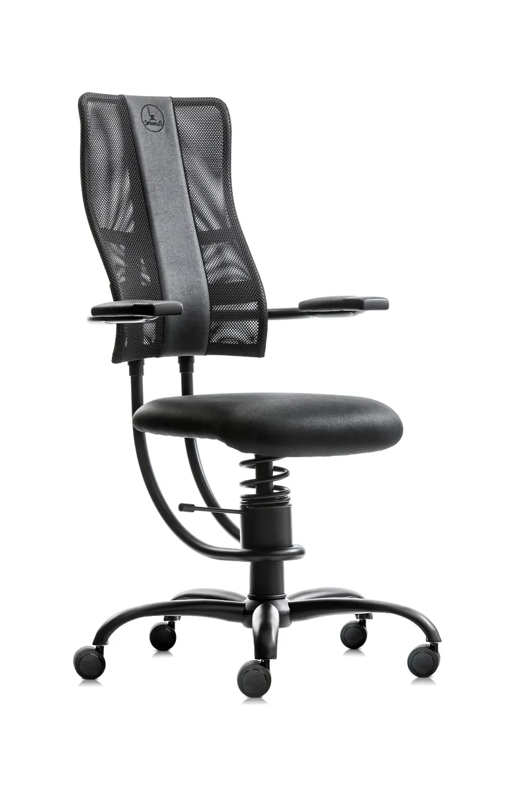
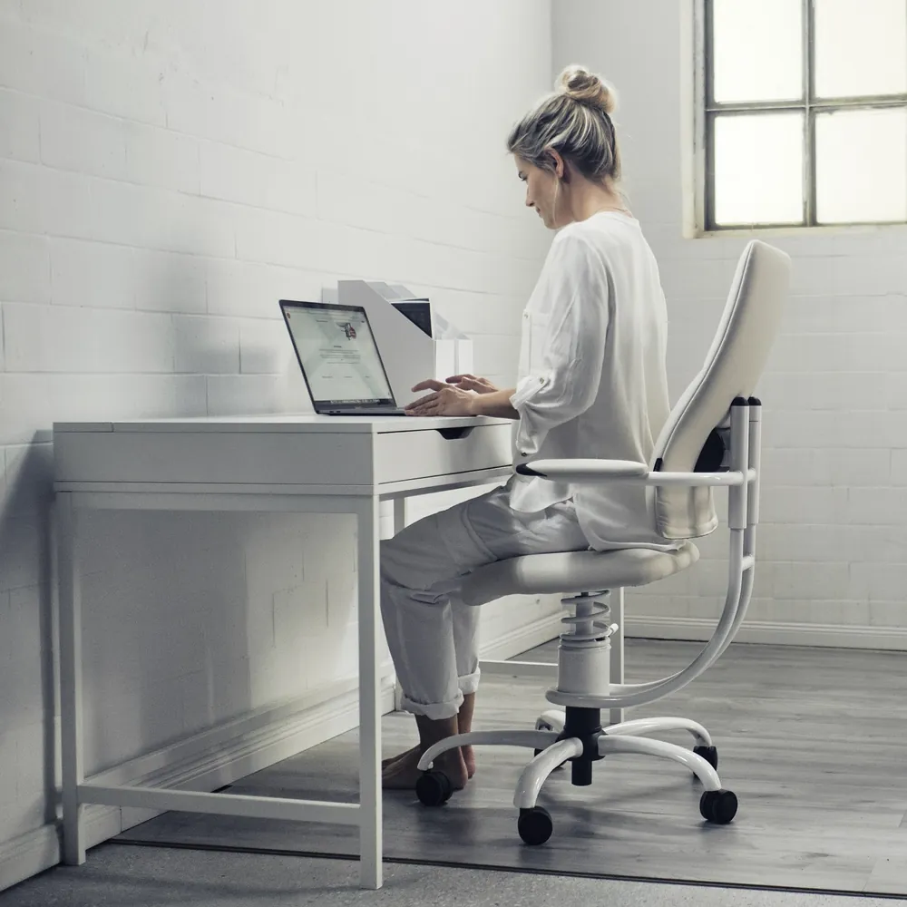
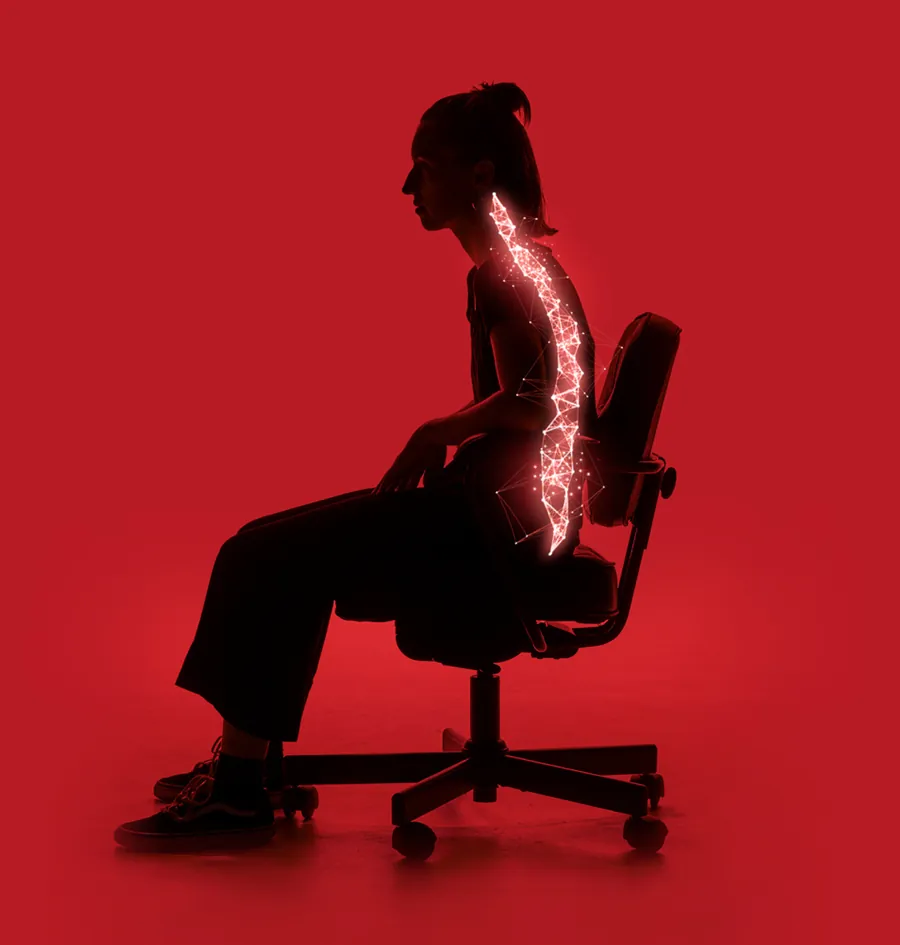
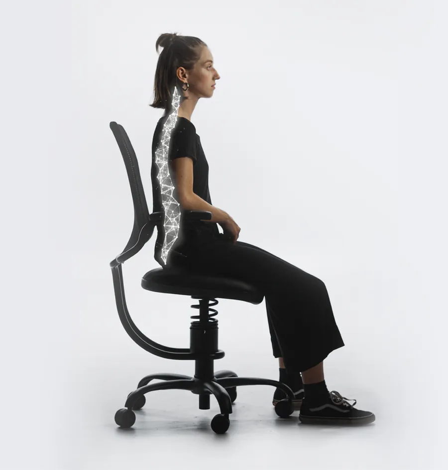
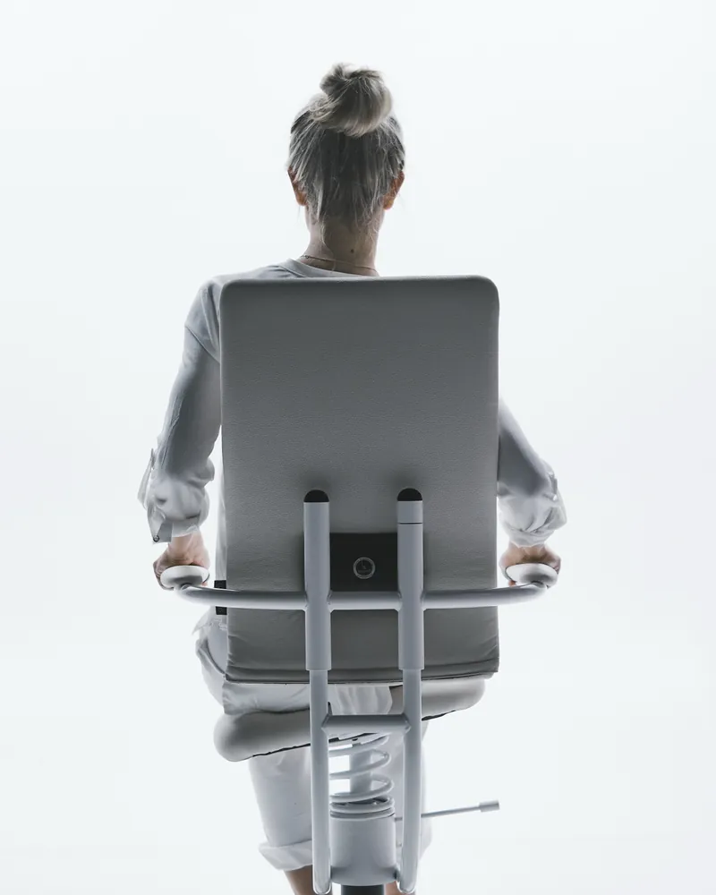
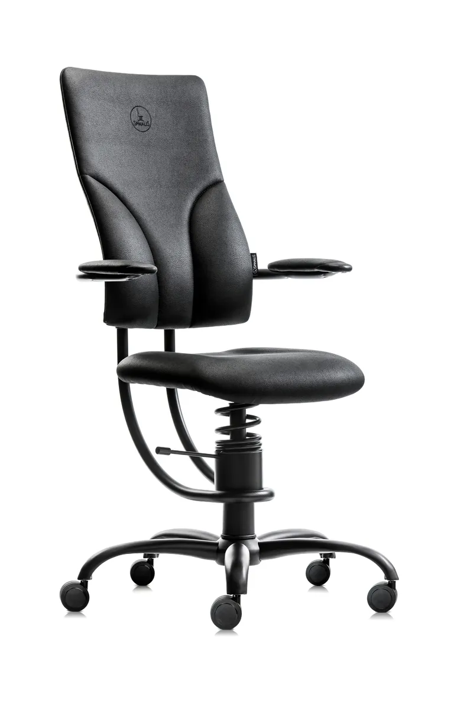
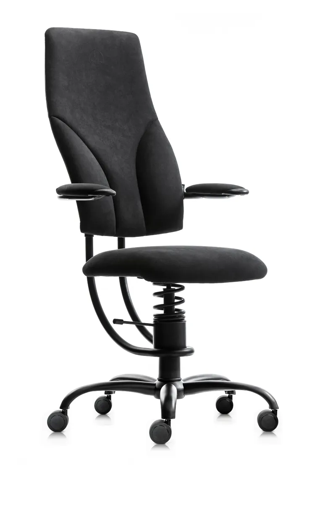
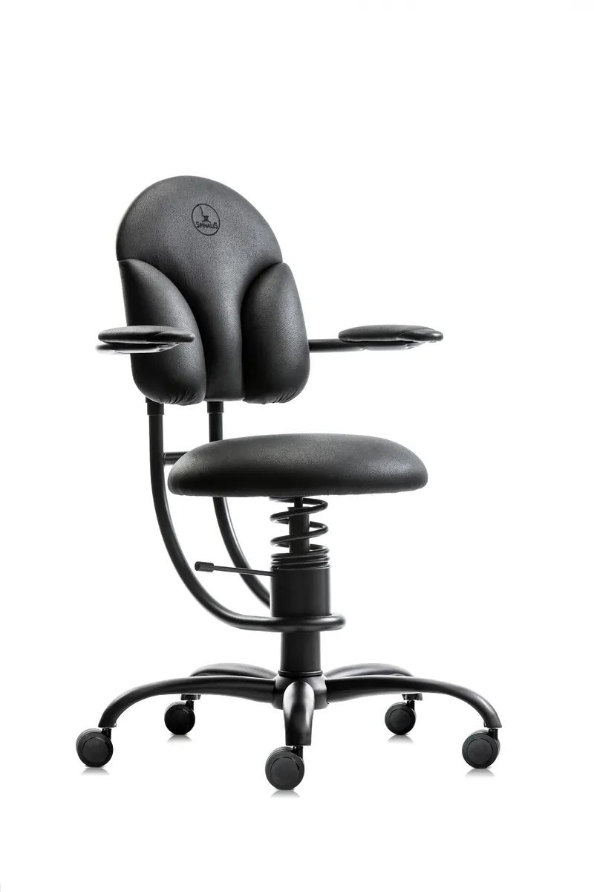

HACKER
Najbolje prodajan. Mrežasto naslonjalo sledi krivulji hrbtenice.
Premični sedež SpinaliS sledi gibanju medenice v vse smeri. Hrbtne mišice ostanejo aktivne, medvretenčne ploščice pa manj obremenjene, tudi po osmih urah za mizo.

Pri mirnem sedenju se mišice in vezi, ki sicer podpirajo hrbtenico, sprostijo. Pritisk se preseli na medvretenčne ploščice, ki se sčasoma obrabljajo in stanjšajo. To je eden najpogostejših vzrokov za bolečine v križu pri ljudeh, ki veliko sedijo.
Tudi dražji ergonomski stoli tega ne rešijo, ker je sedež fiksen. Medenica se ne premika, zato mišice ne delajo.

Sedež miruje, mišice se izklopijo, obremenitev nosijo ploščice.

Sedež se premika, mišice ves čas lovijo ravnotežje in podpirajo hrbtenico.
Pod sedežem je patentiran vzmetni mehanizem, ki se nagiba v vse smeri. Na njem sedite na dva načina, odvisno od tega, kaj vaš hrbet potrebuje.
Sedite na sredini sedeža. Da ohranite ravnotežje, se hrbtne in trebušne mišice ves čas rahlo aktivirajo, podobno kot na terapevtski žogi.
Naslonite se na naslonjalo. Hrbtne mišice počivajo, sedež pa še vedno sledi vašim gibom.

»Stol SpinaliS je pri preprečevanju bolečin v spodnjem delu hrbta jasno boljši od običajnih pisarniških stolov. Ljudem, ki že imajo bolečine, omogoča daljše sedenje.«Ted A. Lennard, dr. med., Springfield Neurological and Spine Institute (ZDA), fluoroskopska primerjalna študija, 2010
»Ker se sedež ves čas premika, morajo hrbtne mišice ves čas delati, obremenitev pa se porazdeli po celotnem medvretenčnem prostoru. Stol priporočam pacientom z bolečinami v križu.«
Prof. dr. Janko Popovićspecialist ortoped
»SpinaliS uporabljam med operacijami oči, ko je ledveni del zelo obremenjen. Sedež sledi mojim gibom in enakomerno porazdeli obremenitev.«
Dušan Pušnik, dr. med.oftalmolog
»Po 15 letih tekmovalnega juda je hrbtenica začutila posledice. S SpinaliS lahko več ur sedim za mizo brez težav.«
Raša Srakaevropska prvakinja v judu
Vsi modeli imajo isti premični mehanizem. Razlikujejo se po podpori, velikosti in namenu.

Najbolje prodajan. Mrežasto naslonjalo sledi krivulji hrbtenice.

Dodatno oblazinjenje v ledvenem delu, za bolj izrazito podporo križa.

Nastavljiv sedež, naslon in naslonjala za roke. Primeren za višje uporabnike.

Prvi model SpinaliS, priporočen za otroke in najstnike.
Telo potrebuje nekaj časa, da se navadi na aktivno sedenje.
Prve dni sedite na stolu SpinaliS do štiri ure na dan in ga izmenjujte z običajnim stolom.
Približno tretjina uporabnikov prvi teden čuti blago utrujenost mišic. To je znak, da so začele delati.
Po enem do dveh tednih se mišice prilagodijo in aktivno sedenje postane vaš običajen način sedenja.
SpinaliS ni čudežno zdravilo. Premični sedež ohranja hrbtne in trebušne mišice aktivne ter razbremeni medvretenčne ploščice, zato veliko uporabnikov, ki veliko sedijo, poroča o manj bolečinah. Pri resnejših poškodbah ali po operaciji hrbtenice se najprej posvetujte z zdravnikom ali fizioterapevtom.
Prve dni je občutek nenavaden, ker smo vajeni fiksnih sedežev. Ob pravilnem usedanju, z obema rokama na naslonjalih in na sredino sedeža, je stol varen. V salonu vam pokažemo pravilno tehniko.
Običajno nekaj ur, da začutite gibanje, in en do dva tedna, da se mišice povsem prilagodijo.
Ker gre za drugačno kategorijo izdelka. Mehanizem je razvit za leta vsakodnevnega gibanja, stol pa je izdelan za več kot 25 let uporabe.
Stoli so zasnovani za uporabnike od 40 do 110 kg (model PILOT do 120 kg). Pri večji teži učinek aktivnega sedenja ni poln.
Vse modele lahko preizkusite v salonu. Nepoškodovan stol lahko vrnete v 30 dneh.
V salonu vam stol nastavimo na vašo višino, pokažemo pravilno sedenje in preizkusite lahko vse modele. Brez obveznosti nakupa.